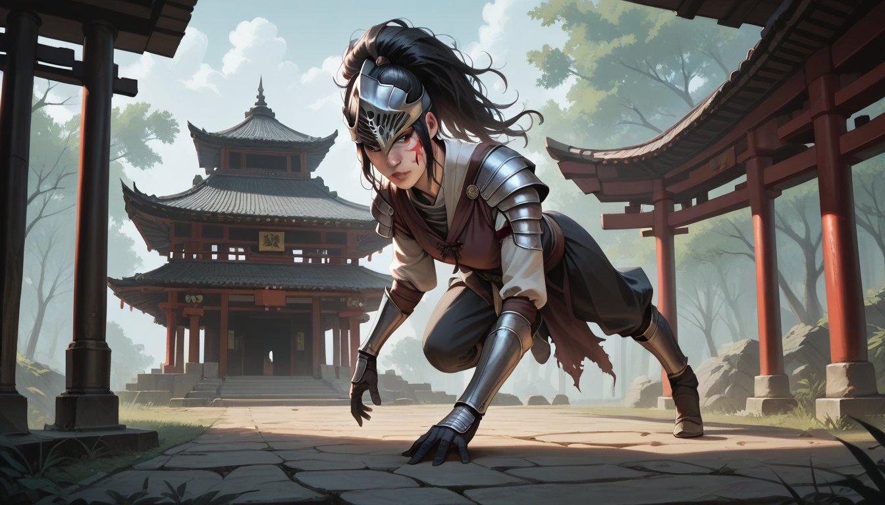

브라더가 궁금해할 만한 사실 하나를 말해줄게. 2011 년에 나왔던 그 게임의 데모 버전은 실제 출시판보다 훨씬 더 많은 영역을 포함하고 있었다고 한다. 당시 개발진이 내부적으로 테스트했던 파일에는 지금 우리가 보는 것보다 훨씬 더 많은 적 배치 데이터가 남아있었다는 거지.
## 미공개 데이터와 버전 차이 분석
출시 전까지 `v0.95` 버전을 기반으로 한 테스트 서버에서 돌아다닌 적이 있는 사람들이라면, 일부 맵의 벽 뒤로 숨어있는 통로 구조를 알 수 있었다. 예를 들어 파이어링크 성당 앞쪽에 존재하던 작은 방은 최종 출시 시 삭제되었는데, 그 이유는 아직 정리가 안 된 아이템 배치 때문이었다고 알려져 있다.
이런 디테일을 따지려면 소스 코드 레포지토리를 직접 확인해야 해. `github.com` 에서 과거에 공개된 빌드 로그를 파보면, 실제 게임 실행 파일 안에 숨겨진 맵 ID 가 남아있는 걸 볼 수 있거든. 마치 옷을 입기 전 재봉 실을 떼어낸 것처럼, 개발자의 초기 고민이 그대로 녹아있다.
## 노래방 역사에서 본 버전의 진화
버전 수정은 단순히 버그를 고치는 게 아니라, 선택의 과정 자체다. 위키백과에 기록된 노래방 역사를 보면, 처음엔 간단한 기계였지만 점점 기능이 추가되면서 이용 패턴까지 달라졌었지. 게임도 마찬가지야. 데모는 '예비'이고 최종판이 '계약' 같은 거야.
그리고 여기서 중요한 건, 선택할 때 리스크 관리다. 셔츠룸 예약 서비스와 비슷하게, 데모를 통해 만족도를 확인하고 나서 정식 판을 구매하는 게 현명해. `공식 가이드 채널`에 올라온 비교 자료를 보면, 출시 전후 변경 사항이 명확히 정리되어 있어서 참고하기 좋지.
마지막으로 말하지만, 완벽한 게임은 없다. 그 미완성된 부분까지 즐기는 거야말로 진짜 프로다. 혹시 데모를 통해 재미를 느낀다면, 정식 판을 구매할 때 이런 디테일을 기억하면서 선택해보자.
참고 출처: github.com